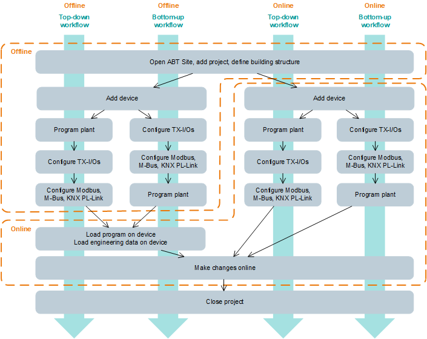

Programming workflow

Online means that you are connected to a device.
Connect and disconnect

Workflows
Depending on your goal, choose one of the following workflows:
Goal | Workflow |
|---|---|
I want to use an existing plant as a starting point and modify it for my customer-specific plant. | |
I want to create my own plant from scratch. |